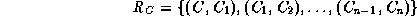
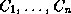
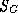
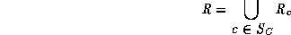
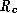
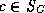

Common Lisp the Language, 2nd Edition

The
defclass form for a class provides a total ordering on that
class and its direct superclasses. This ordering is called the local precedence order. It is an ordered list of the class and its
direct superclasses. The class precedence list for a
class C is a total ordering on C and its superclasses that is consistent
with the local precedence orders for C and its superclasses.
A class precedes its direct superclasses, and a direct superclass precedes all other direct superclasses specified to its right in the superclasses list of the defclass form. For every class C, define

where  are the direct superclasses of C in the order in which they are mentioned in the defclass form. These ordered pairs generate the total ordering on the class C and its direct superclasses.
Let  be the set of C and its superclasses. Let R be

The set R may or may not generate a partial ordering, depending on whether the , , are consistent; it is assumed that they are consistent and that R generates a partial ordering. When the are not consistent, it is said that R is inconsistent.
To compute the class precedence list for C,
topologically sort the elements of  with respect to the
partial ordering generated by R. When the topological
sort must select a class from a set of two or more classes, none of
which are preceded by other classes with respect to R,
the class selected is chosen deterministically, as described below.
If R is inconsistent, an error is signaled.
with respect to the
partial ordering generated by R. When the topological
sort must select a class from a set of two or more classes, none of
which are preceded by other classes with respect to R,
the class selected is chosen deterministically, as described below.
If R is inconsistent, an error is signaled.